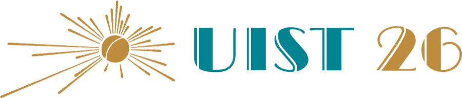

Pull out the graphic
A vision-language model finds the graphic on a reference frame and a segmentation model tracks it into a clean animated layer, with no project files needed.

University of WashingtonUniversity of CalgaryUniversity of Colorado BoulderAdobe Research
* Work done during an internship at Adobe Research.
Editors routinely reframe landscape videos to portrait for social media, but lower thirds, title cards and scoreboards get cropped, shrunk or distorted along the way. CARVid is a content-aware retargeting tool that recovers these graphics from flat, already-published videos and recomposes them for the new aspect ratio. It combines foundation vision and segmentation models with a novel image processing algorithm for text-aware scaling, layout-aware segmentation and content-aware space removal, supporting both automatic and user-directed recomposition.
A vision-language model finds the graphic on a reference frame and a segmentation model tracks it into a clean animated layer, with no project files needed.
Layout-aware segmentation splits the graphic into text blocks, logos and branding that can be edited on their own.
Text-aware scaling, content-aware space removal and layout reflow fit the graphic automatically, or the editor rearranges it directly.
CARVid tries the gentlest operation first and moves on only when it cannot reach the target width with readable text.
Each row shows the 16:9 input on the left and CARVid's 9:16 output on the right, at the same height.
To appear in the 39th Annual ACM Symposium on User Interface Software and Technology (UIST 2026).
@inproceedings{gunturu2026carvid,
title = {CARVid: Content-Aware Retargeting of Videos with
On-Screen Graphics},
author = {Gunturu, Aditya and Leake, Mackenzie and
Suzuki, Ryo and DiVerdi, Stephen},
booktitle = {The 39th Annual ACM Symposium on User Interface
Software and Technology},
series = {UIST '26},
year = {2026},
publisher = {Association for Computing Machinery},
doi = {10.1145/3830398.3830716}
}